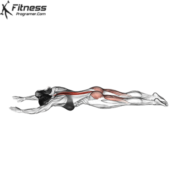

腳踏車捲腹
4組 / 8-12下
仰臥，雙手輕放頭後，雙腿抬起呈 90°，一腳伸直一腳屈膝。
轉動上半身，對側肘與膝接觸時，收緊腹部，避免用脖子拉頭。
保持穩定的呼吸，動作緩慢且有控制，
避免用腰部發力，專注核心收縮！

超人式
4組 / 8-12下
趴在地面，雙手伸直向前，雙腿伸直並緊貼地面。
收緊核心與臀部，抬起雙手與雙腿，同時保持胸部略微離地。
頂端稍停並擠壓背部與臀部肌肉，控制回程，
避免用脖子或下背部過度發力，保持動作流暢！